AD Connector 構築・権限委任
AD Connector専用サービスアカウントと最小権限の委任を準備する
VPCピアリング、往復ルート、DC用Security GroupおよびAD Connector作成を依存順にまとめる
AD Connector用サービスアカウントの作成・権限委任・運用手順
目次
概要
本手順書で実施すること
AWS Managed Microsoft ADのad\Usersに、委任用セキュリティグループConnectorsとAD Connector専用ユーザーADConnectorServiceを作成します。サービスアカウントをConnectorsへ追加したうえで、Amazon WorkSpacesのコンピューターオブジェクト作成先ad\Computers\WorkSpacesに、コンピューターオブジェクトの作成、削除、読み取りおよび書き込み権限を委任する
本手順では、サービスアカウントの状態確認、パスワード変更時の更新順序および使用終了時の切り替えも取り扱います。AD Connector本体の作成とAmazon WorkSpacesの作成は、別手順書で実施する
完了条件
次の項目をすべて確認できた時点で、本作業を完了とする
- ✔
Connectorsがグローバル／セキュリティグループとして作成されている - ✔
ADConnectorServiceが有効かつ未ロックで、初回ログオン時のパスワード変更が無効である - ✔
ADConnectorServiceがConnectorsへ所属し、申請されていない高権限グループへ所属していない - ✔
Connectorsの委任先がad\Computers\WorkSpacesである - ✔ WorkSpacesのコンピューターオブジェクトを指定OUへ作成・削除できる
注意：アカウントの配置先と権限委任先を分ける
ConnectorsとADConnectorServiceの配置先はad\Usersです。今回の権限委任先は、WorkSpacesのコンピューターオブジェクトが作成されるad\Computers\WorkSpacesです。配置先のad\Usersへ機械的に委任しないでください
前提条件
- ✔ 対象ドメインに参加したWindows管理端末を使用している
- ✔ Active Directoryユーザーとコンピューター（ADUC）がインストールされている
- ✔ AWS Managed Microsoft ADのお客様管理OUで、グループ、ユーザー、OUおよび委任設定を管理できるドメイン資格情報を使用している
- ✔ DNSドメイン、NetBIOS名、OUおよびアカウント名が承認済みの設計と一致している
- ✔ WorkSpacesのコンピューターオブジェクト作成先OUが決定している
- ✔ パスワードの保管先、更新担当者、更新周期および障害時の連絡先が決定している
- ✔ パスワードを手順書、作業チケット、チャット、コマンド履歴および画面キャプチャへ記録しない運用になっている
ローカルのAdministratorで管理端末へサインインしただけでは、Active Directoryを変更できません。ADUCと確認用PowerShellは、対象ドメインの管理資格情報で起動する
今回の設定値
| 項目 | 今回の設定値 |
|---|---|
| DNSドメイン | ad.example.com |
| NetBIOS名 | ad |
| お客様管理OU | ad |
| ユーザー・グループ配置先 | ad\Users |
| コンピューターOU | ad\Computers |
| WorkSpacesコンピューターOU | ad\Computers\WorkSpaces |
| 委任用グループ | Connectors |
| サービスアカウント | ADConnectorService |
| UPN | ADConnectorService@ad.example.com |
パスワード自体は表、本文および証跡へ記録しない
本番環境のOU、グループおよびサービスアカウント名は、現時点の設計値を記載しています。本番作業前に構成資料と照合し、変更承認がある場合だけ更新する
アカウントと権限の設計
サービスアカウント
- AD Connectorごとに、通常のADドメインユーザーを1アカウント用意する
- 人が通常作業へ使用するユーザーと共用しない
Domain Admins、Enterprise Admins、AWS Delegated Administratorsなどの高権限グループへ追加しないDomain Usersと、承認済みのConnectorsだけに所属させる- 「ユーザーは次回ログオン時にパスワード変更が必要」は無効にする
- アカウントを有効、未ロックの状態に保つ
- KerberosおよびLDAPによるネットワーク認証を妨げる設定を行わない
AD ConnectorはAWSコンソールへユーザー名とパスワードを登録する方式であるため、本書ではグループ管理サービスアカウント（gMSA）ではなく、専用の通常ユーザーを使用する
AD Connectorで使用するサービスアカウントには、ユーザーとグループの読み取りが必要です。Amazon WorkSpacesで使用する場合は、コンピューターのドメイン参加とコンピューターオブジェクトの作成権限も必要
出典：AWS公式：AD Connectorの前提条件とサービスアカウントへの権限委任
コンピューター格納先OU
WorkSpaces専用OUは自動作成されません。専用OUを指定しない場合は既定のコンピューター格納先が使用されますが、GPOの適用範囲と委任権限を分離しやすくするため、次のような専用OUを使用する
ad
└─ Computers
└─ WorkSpaces本番では表のad\Computers\WorkSpacesを使用し、WorkSpacesへディレクトリを登録した後の「ターゲットドメインと組織単位」に同じOUを指定します。作業前に構成資料と照合し、委任先OUとWorkSpaces側の指定OUを一致させる
Connectorsグループを作成する
目的
サービスアカウントへ権限を直接付与せず、委任用グループを介して管理できるようにする
操作手順
- ADUCを対象ドメインの管理資格情報で起動
ad.example.comを展開し、ad、Usersの順に選択Usersを右クリックし、「新規作成」から「グループ」を選択

画像内の番号
① ad\Usersを右クリックします。②「新規作成」を選択し、③「グループ」を選択する
- 次の値を入力
| 項目 | 設定値 |
|---|---|
| グループ名 | Connectors |
| グループのスコープ | グローバル |
| グループの種類 | セキュリティ |

画像内の番号
① グループ名にConnectorsを入力します。②「グローバル」を選択し、③「セキュリティ」を選択します。④「OK」を選択する
- 「OK」を選択
Usersの一覧に、種類「セキュリティ グループ - グローバル」のConnectorsが1件表示されることを確認

画像内の番号
① 一覧にConnectorsが表示され、同じ行の種類が「セキュリティ グループ - グローバル」であることを確認する
実施後の確認
- ✔
Connectorsがad\Usersへ作成されている - ✔ グループのスコープが「グローバル」、種類が「セキュリティ」である
既存の同名グループがある場合は新規作成せず、スコープ、種類、用途および既存メンバーを確認する。誤って作成した場合は、メンバー、委任およびAD Connectorから未使用であることを確認してから削除する
サービスアカウントを作成する
作成前の確認
| 項目 | 確認内容 |
|---|---|
| ログオン名 | ディレクトリ内で一意であり、命名規則に合致すること |
| 用途 | 対象AD ConnectorとWorkSpaces用であること |
| 初期パスワード | 実効パスワードポリシーを満たすこと |
| 保管 | 承認済みのシークレット保管先と管理者が決まっていること |
| 更新 | 期限前の更新日、担当者および障害時の更新手順が決まっていること |
操作手順
ad\Usersを選択し、ツールバーの「現在のコンテナーに新しいユーザーを作成」を選択

画像内の番号
① 左側のツリーでad\Usersを選択します。② ツールバーの「現在のコンテナーに新しいユーザーを作成」を選択する
- 次の値を入力
| 項目 | 設定値 |
|---|---|
| 姓 | ADConnectorService |
| 名 | Service |
| フルネーム | ADConnectorService |
| ユーザーログオン名 | ADConnectorService |
| ユーザーログオン名（Windows 2000より前） | ADConnectorService |
- UPNが
ADConnectorService@ad.example.comとなり、個人ユーザーと誤認しない表示名になっていることを確認

画像内の番号
①「姓」、②「名」、③「フル ネーム」を入力します。④ ユーザーログオン名とUPNサフィックスを確認し、⑤「ユーザーログオン名（Windows 2000より前）」を確認する。⑥「次へ」を選択する
- 初期パスワードと確認用パスワードを入力
- 「ユーザーは次回ログオン時にパスワード変更が必要」をオフに
- アカウントを無効にする設定がオフであることを確認
- パスワード運用方式を確認して「次へ」を選択

画像内の番号
① 初期パスワードと確認用パスワードを入力します。②「ユーザーは次回ログオン時にパスワード変更が必要」をオフにします。③「パスワードを無期限にする」は、下記の注意に従って承認済みの運用方式を選択します。④「アカウントは無効」がオフであることを確認し、⑤「次へ」を選択する
注意：パスワード無期限はアカウント単位の例外設定である
今回の画像では「パスワードを無期限にする」が有効です。これはPasswordNeverExpiresによるアカウント単位の例外であり、Fine-Grained Password Policy（PSO）が適用されている根拠ではありません。本番環境では承認済みのパスワード運用を採用し、PSOの適用有無はGet-ADUserResultantPasswordPolicyで確認する
- フルネーム、ユーザーログオン名およびパスワード設定を確認
- 「完了」を選択

画像内の番号
① 表示されているフルネーム、ユーザーログオン名およびパスワード設定を確認し、問題がなければ「完了」を選択する
実施後の確認
- ✔ 承認済みのログオン名を持つ専用アカウントが1件だけ作成され、有効である
- ✔ 初回ログオン時のパスワード変更が要求されない
AD Connector作成前に誤りを発見した場合は、未使用であることを確認してアカウントを無効化し、正しいアカウントを作成します。AD Connector作成後は、先にアカウントを無効化または削除しないでください
サービスアカウントをConnectorsへ追加する
操作手順
ad\Usersで、作成したサービスアカウントのプロパティを開く「所属するグループ」タブを選択
既定の
Domain Users以外に、意図しない高権限グループが表示されていないことを確認「追加」を選択
オブジェクト名へ
Connectorsを入力「名前の確認」を選択し、対象ドメインの
Connectorsへ解決されることを確認「OK」を選択
「所属するグループ」に
Domain UsersとConnectorsが表示されることを確認「適用」、「OK」の順に選択
実施後の確認
- ✔ サービスアカウントが
Connectorsのメンバーである - ✔
Domain Admins、Enterprise Admins、AWS Delegated Administratorsなど、申請されていない高権限グループへ所属していない
WorkSpaces用コンピューターOUを決定または作成する
この節と次の権限委任は、WorkSpaces側のOU手順を未実施の場合だけ行います。Amazon WorkSpaces用OU作成・権限委任・ターゲットOU設定手順で同じOUとConnectorsへの委任を完了済みの場合は、OUと詳細ACLが本節の要件を満たすことだけを確認し、ウィザードを再実行しない
操作手順
- 承認済みのOU設計を確認
- 専用OUを作成する場合は、
ad\Computersを右クリックし、「新規作成」から「組織単位（OU）」を選択 - 今回および本番の設定値として
WorkSpacesを入力します。本番作業前に表の設計値と一致することを確認 - 誤削除防止設定を有効にして作成
- OUのプロパティまたはPowerShellで識別名（DN）を確認し、運用台帳へ記録
Get-ADOrganizationalUnit -Filter * |
Select-Object Name, DistinguishedName実施後の確認
- ✔ WorkSpacesのコンピューターオブジェクト格納先が一意に決まっている
- ✔ ドメインルートまたはAWS管理OUを委任先にしていない
- ✔ WorkSpaces側のターゲットOUと同じ識別名（DN）を使用する
WorkSpaces用コンピューターOUへ権限を委任する
本環境ではad\Computers\WorkSpacesをコンピューター専用OUとして使用します。OU作成とWorkSpaces側のターゲットOU設定は、Amazon WorkSpaces用OU作成・権限委任・ターゲットOU設定手順を参照してください。本手順では、Connectorsへコンピューターオブジェクトの作成、削除、読み取りおよび書き込みだけを委任する
既存ACLに同じConnectorsのアクセス許可エントリがある場合は、対象オブジェクト、権限および適用先を詳細ACLで照合します。要件を満たしていれば委任ウィザードを再実行せず、重複ACEを作成しない
AWS公式の汎用例ではコンピューターオブジェクトとユーザーオブジェクトの両方を選択する場合がありますが、ユーザーを格納しない本環境のWorkSpaces専用OUへ、ユーザーオブジェクトの作成・削除・書き込み権限は追加しません。ユーザー検索に必要な読み取りはad\Users側で維持し、AD Connectorが「アクティブ」でWorkSpacesコンソールから対象ユーザーを検索できることで確認する
権限の範囲を広げないため、委任開始時にad\Computers\WorkSpacesを選択したことを確認する。AWS Managed Microsoft ADでは、ドメインルート、AWS ReservedおよびDomain Controllersから開始しない
操作手順
ADUCで、承認済みのWorkSpacesコンピューター格納先OUを選択
対象OUを右クリックし、「制御の委任」を選択
「オブジェクト制御の委任ウィザードの開始」が表示されたことを確認し、「次へ」を選択します。この開始画面自体には対象OUは表示されない
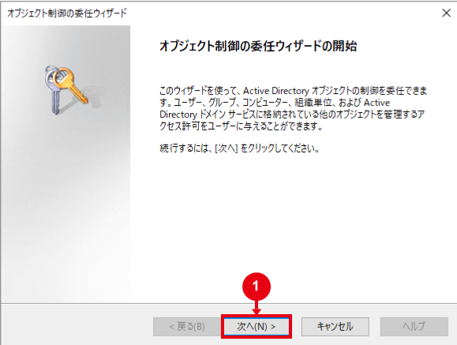
画像内の番号
①「次へ」を選択する
- 「選択されたユーザーとグループ」で「追加」を選択
- オブジェクト名へ
Connectorsを入力し、「名前の確認」を選択 - 対象ドメインの
Connectorsへ解決されたことを確認し、「OK」を選択

画像内の番号
① 検索場所が対象ドメインであることを確認する。② オブジェクト名にConnectorsを入力し、③「名前の確認」を選択します。対象ドメインのグループへ解決されたら、④「OK」を選択する
- 「選択されたユーザーとグループ」に
Connectorsだけが表示されていることを確認し、「次へ」を選択
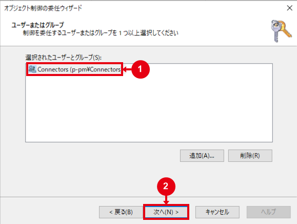
画像内の番号
①「選択されたユーザーとグループ」に対象ドメインのConnectorsだけが表示されていることを確認し、②「次へ」を選択する
- 「委任するタスク」で「委任するカスタムタスクを作成する」を選択し、「次へ」を選択

画像内の番号
①「委任するカスタムタスクを作成する」を選択し、②「次へ」を選択する
- 「Active Directoryオブジェクトの種類」で「フォルダー内の次のオブジェクトのみ」を選択
- 「コンピューター オブジェクト」を選択します。本環境のWorkSpaces専用OUでは「ユーザー オブジェクト」を選択しないでください
- 同じ画面で次の項目を選択し、「次へ」を選択
- このフォルダーに選択したオブジェクトを作成する
- このフォルダー内の選択したオブジェクトを削除する

画像内の番号
①「フォルダー内の次のオブジェクトのみ」を選択します。②「コンピューター オブジェクト」を選択します。③ コンピューターオブジェクトの作成と削除を選択し、④「次へ」を選択する
- 「これらのアクセス許可を表示します」で「全般」と「プロパティ固有」が選択され、「特定の子オブジェクトの作成または削除」が未選択であることを確認
- 「アクセス許可」で「読み取り」を選択し、WorkSpaces利用のため「書き込み」も選択して「次へ」を選択

画像内の番号
①「全般」と「プロパティ固有」が選択され、「特定の子オブジェクトの作成または削除」が未選択であることを確認する。②「読み取り」と「書き込み」を選択し、③「次へ」を選択する
- 「オブジェクト制御の委任ウィザードの完了」で、委任先OU、対象グループ、対象オブジェクトおよび権限を確認
- 内容に問題がなければ「完了」を選択
情報：WorkSpaces利用時は書き込み権限も選択する
基本例では「読み取り」のみを選択しますが、シームレスなドメイン参加またはWorkSpacesを使用する場合は「書き込み」も有効にします。本環境ではWorkSpacesを使用するため、図13の「読み取り」と「書き込み」の両方を選択した状態が正しい設定
AWS公式の汎用例ではコンピューターオブジェクトとユーザーオブジェクトを選択します。本環境ではユーザーを配置しない専用OUへ権限範囲を限定するため、コンピューターオブジェクトだけを選択します。ユーザーとグループの読み取り権限は別途確認し、最終的にWorkSpaceの作成、再構築および削除で動作を確認する
出典：AWS公式：AD Connectorのサービスアカウントへ権限を委任する
実施後の確認
- ✔
Connectorsの委任先がad\Computers\WorkSpacesと一致している - ✔ ドメインルートおよびAWS管理OUへ新しい委任を付与していない
- ✔ コンピューターオブジェクトの作成、削除、読み取りおよび書き込みが選択されている
作成後の確認
ADオブジェクトの確認
対象ドメインの管理資格情報でPowerShellを起動して実行します。本番でも表のADConnectorServiceを使用します。構成変更が承認されている場合だけ、コマンドのアカウント名を変更後の値へ読み替える
Get-ADUser -Identity 'ADConnectorService' `
-Properties Enabled,LockedOut,PasswordExpired,PasswordNeverExpires,PasswordLastSet |
Select-Object SamAccountName,
Enabled,
LockedOut,
PasswordExpired,
PasswordNeverExpires,
PasswordLastSet
Get-ADPrincipalGroupMembership 'ADConnectorService' |
Select-Object Name, GroupScope, GroupCategory次を確認する
- ✔
EnabledがTrueである - ✔
LockedOutとPasswordExpiredがFalseである - ✔
Connectorsへ所属している - ✔ 申請されていない高権限グループへ所属していない
OUの委任内容は、承認済みのDNへ読み替えて確認する
dsacls '<WorkSpacesコンピューターOUのDN>'AD ConnectorおよびWorkSpacesの確認
AD Connector作成後に次を確認する
- Directory ServiceでAD Connectorのステータスが「アクティブ」であることを確認
- WorkSpacesから対象ディレクトリのADユーザーを検索できることを確認
- 検証用WorkSpaceを1台作成できることを確認
- コンピューターオブジェクトが承認済みのWorkSpaces OUへ作成されることを確認
- 検証ユーザーがWorkSpaceへサインインできることを確認
- 再構築および削除の検証で、OU権限エラーが発生しないことを確認
ネットワーク接続テストだけでは、OUへのコンピューターオブジェクト作成権限まで確認できません。最終確認には新しい検証用WorkSpaceの作成が必要
パスワード運用
AWS Managed Microsoft ADの既定ドメインポリシーでは、パスワードの最大有効期間は42日です。Fine-Grained Password Policy（FGPP）または承認済みのアカウント例外がない場合、サービスアカウントにも適用される
期限切れ、ロック、無効化、または「次回ログオン時にパスワード変更」が有効になると、AD Connectorのユーザー検索およびWorkSpacesのドメイン参加が失敗する可能性がある
PasswordNeverExpires=Trueはアカウント単位の例外であり、PSOの適用を示すものではありません。実効パスワードポリシーは次のコマンドで確認する
Get-ADUserResultantPasswordPolicy -Identity 'ADConnectorService'定期変更
- 変更日時、担当者、対象AD Connector、影響確認項目および切り戻し担当者を確定
- AD側でサービスアカウントのパスワードを変更
- 直後にDirectory Serviceの対象AD Connectorを開き、サービスアカウント認証情報を同じ新パスワードへ更新
- AD Connectorのステータスが「アクティブ」であることを確認
- WorkSpacesからADユーザーを検索できることを確認
- 必要に応じて検証用WorkSpaceの作成またはドメイン接続を確認
- 次回更新日と結果を運用台帳へ記録
警告：パスワード変更はAD側から実施する
変更順序は、必ず「AD側」から「AD Connector側」とします。AD側で変更した直後に、AD Connectorへ保存されている認証情報を同じ新パスワードへ更新してください。AD Connector側だけを更新しても、Active Directory側のパスワードは変更されない
42日の既定ポリシーを使用する場合は、組織で承認された更新周期に従い、有効期限より前に変更を完了する
障害時の確認
- アカウントが有効であること
- アカウントがロックされていないこと
- パスワードが期限切れでないこと
- 次回ログオン時の変更が要求されていないこと
- Directory Serviceへ登録された認証情報がAD側の現在値と一致していること
- 対象OUに、承認済みの委任が残っていること
無効化・削除・切り戻し
AD Connectorが使用中のサービスアカウントを先に無効化、削除またはConnectorsから除外しない
安全に切り替える場合は、次の順序で実施する
- 新しい専用サービスアカウントを作成し、
Connectorsへ追加 - AD Connectorの認証情報を新アカウントへ更新
- AD Connectorの「アクティブ」、ユーザー検索および検証用WorkSpace作成を確認
- 問題がある場合は、AD Connectorを旧アカウントへ戻す
- 正常確認後に旧アカウントを無効化
- 定められた観察期間後に、旧アカウントを
Connectorsから除外して削除
委任設定を削除する場合は、対象OUの詳細なセキュリティ設定でConnectorsに対する明示的なアクセス制御エントリだけを削除します。継承された権限や、他のユーザー・グループの権限を変更しない
既存のad\Usersへの委任が適切かは、WorkSpacesのターゲットOUと継承設計を確認して判断します。対象外OUへの不要な明示的委任と確認できた場合に限り、正しいOUへの委任と動作確認が完了してから、Users OU上のConnectorsに対する明示的な権限だけを削除する
VPCピアリング・ドメインコントローラーSG変更・AD Connector作成手順
目次
概要
本手順書で実施すること
AWS Managed Microsoft ADを配置したVPC002（ad-vpc-002／192.168.225.0/24）と、Amazon WorkSpacesおよびAD Connectorを配置するVPC003（ad-vpc-003／192.168.226.0/23）をVPCピアリングで接続します。双方のルートテーブルへ往復経路を設定した後、Managed ADのドメインコントローラー用セキュリティグループへVPC003からの許可ルールを追加する
続いて、VPC003の異なるアベイラビリティーゾーンにあるサブネット192.168.226.128/28と192.168.226.160/28へSmallのAD Connectorを作成し、ad.example.comのDNS IPアドレス192.168.225.68と192.168.225.126へ接続する
完了条件
次の項目をすべて確認できた時点で、本作業を完了とする
- ✔ VPCピアリング接続が「アクティブ」である
- ✔ VPC002とVPC003の双方に、ピアリング接続をターゲットとする往復ルートがある
- ✔ Managed ADのドメインコントローラー用SGに、VPC003の承認済み許可ルールがある
- ✔ AD Connectorが異なる2つのアベイラビリティーゾーンへ作成されている
- ✔ AD Connectorのステータスが「アクティブ」である
- ✔ 接続先ドメイン、VPC、サブネットおよび自動作成されたSGが設定値と一致している
AD Connectorで作成される内容
AD Connectorを作成すると、Directory Serviceは選択した2つのサブネットに対応する2つのアベイラビリティーゾーンへAD Connectorインスタンスを配置し、各インスタンスへENIを作成します。これらのENIはVPCとAD Connector間の接続に必要なため、手動で削除しません。障害が発生したAD Connectorインスタンスは、同じアベイラビリティーゾーンで同じIPアドレスを使用して自動的に置き換えられる
AD Connectorは既存Active Directoryへの認証要求を中継し、ディレクトリデータをAWS側へレプリケートしない
通信要件と本環境の設計
AD Connector接続時の最小要件として、接続先ドメインコントローラーに対し、AD Connectorを配置する2サブネットのCIDRからTCP/UDP 53、88、389を許可します。これはAD Connectorがディレクトリへ接続するための最小3ポートであり、WorkSpace本体がドメイン参加・認証・GPO等でドメインコントローラーと通信するための全要件ではない
WorkSpaces VPCとディレクトリコントローラー間では、DNS、Kerberos、NTP、RPC、Netlogon、LDAP、SMB、LDAPS、動的RPCおよびグローバルカタログ等の追加ポートが必要です。ポートを限定する設計へ変更する場合は、作業時点の要件一覧、方向、プロトコルおよび送信元／宛先を確認する。また、AD Connectorの2サブネットは異なるアベイラビリティーゾーンに配置する必要がある
本番環境では、複数VPCからのActive Directory関連通信とSGルール数を考慮し、各接続元VPCのCIDRから「すべてのトラフィック」を1ルールずつ許可する設計が既存資料で確認されています。これは本環境固有のセキュリティ例外であり、AWS共通の必須設定または最小権限の例ではありません。必要ポートへ限定できるかを検討し、限定しない理由とリスクを変更申請に記録して承認を得ます。採用時は、送信元CIDR、ルーティング、ネットワークACLおよび組織のセキュリティ基準を再確認する
前提条件
- ✔ 作業リージョンがアジアパシフィック（東京）である
- ✔ AWS Managed Microsoft ADおよび対象VPCが作成済みである
- ✔ Managed AD側VPCとAD Connector側VPCのCIDRが重複していない
- ✔ 対象VPC、対象サブネットおよび両VPCの変更対象ルートテーブルを特定している
- ✔ DC用SGとDirectory IDの対応をAWS Directory Serviceコンソールで確認している
- ✔ AD Connector用の2サブネットが同一VPCかつ異なるアベイラビリティーゾーンにあり、同じネットワークタイプである
- ✔ 対象VPCのハードウェアテナンシーが
defaultである - ✔ 接続先が単一ラベルではなく完全修飾ドメイン名である
- ✔ Active Directoryのドメイン機能レベルがWindows Server 2003以上である
- ✔ 対象ユーザーのKerberos事前認証が有効である
- ✔ 接続先DNSサーバー／ドメインコントローラーのIPアドレスを2つ確認している
- ✔
_ldap._tcp.<DNSドメイン名>と_kerberos._tcp.<DNSドメイン名>のSRVレコードを接続先DNSで解決できる - ✔ AD Connector用サービスアカウント作成・権限委任・運用手順を完了している
今回の設定値
| 項目 | 今回の設定値 |
|---|---|
| 接続先DNSドメイン | ad.example.com |
| NetBIOS名 | ad |
| Managed AD配置VPC | ad-vpc-002／192.168.225.0/24 |
| AD Connector配置VPC | ad-vpc-003／192.168.226.0/23 |
| 接続先DNS／DC IP | 192.168.225.68、192.168.225.126 |
| AD Connector用サブネット | 192.168.226.128/28、192.168.226.160/28 |
| AD Connectorサイズ | Small |
| サービスアカウント | ADConnectorService |
Directory ID、SG ID、VPC IDおよびサブネットIDは、作業時点のAWSコンソールで確認する。パスワードは本文および画像へ記録しない
VPC別の設定値
| 対象 | DC用SGへ追加する送信元 | AD Connectorサブネット | 既存環境のAD Connector DNS IP（AWS割当・再作成時は変動し得る） |
|---|---|---|---|
| VPC003 | 192.168.226.0/23 |
192.168.226.128/28、192.168.226.160/28 |
192.168.226.140、192.168.226.170 |
| VPC004 | 192.168.228.0/23 |
192.168.228.128/27、192.168.228.160/27 |
192.168.228.152、192.168.228.190 |
| VPC005 | 192.168.230.0/23 |
192.168.230.128/27、192.168.230.160/27 |
192.168.230.149、192.168.230.175 |
| VPC006 | 192.168.232.0/23 |
192.168.232.128/27、192.168.232.160/27 |
192.168.232.154、192.168.232.176 |
注意：AD ConnectorのAWS割当DNS IPを作成画面へ入力しない
表のAD Connector DNS IPは作成後にAWS側で割り当てられた既存環境の確認値であり、再作成時に同じIPになる保証はありません。また、「既存ディレクトリのDNS IPアドレス」欄へ入力する値ではありません。作成画面には、接続先AWS Managed Microsoft ADのDNS／DC IPを入力します。作成後は現行コンソール値を運用台帳へ記録する
作業前確認
対象SGの識別
- AWS Directory Serviceコンソールで対象のAWS Managed Microsoft ADを開く
- 「ネットワークとセキュリティ」等から、ドメインコントローラーへ関連付くSGを確認
- VPCコンソールでSGを開き、VPCが
ad-vpc-002であることを確認 - SG名が通常「Managed ADのDirectory ID +
_controllers」形式であることを確認 - 変更前のインバウンドルールをCSVまたは画面キャプチャで保存
注意：Managed AD用SGとAD Connector用SGを取り違えない
AD Connector作成後にも「AD ConnectorのDirectory ID + _controllers」形式の別SGが自動作成されます。名称が似ているため、Directory IDとVPCを照合してから操作する
VPCピアリング接続を作成する
今回の設定値は、Managed AD側がVPC002（192.168.225.0/24）、AD Connector／WorkSpaces側がVPC003（192.168.226.0/23）です。本番では、画面表示のVPC IDとCIDRを構成資料と照合してから操作する
- VPCコンソールで「ピアリング接続」を開き、「ピアリング接続を作成」を選択
- 名前を入力します。今回の名称は
002-003-peering - リクエスタVPCにManaged AD側のVPC002を選択
- アクセプタVPCにAD Connector側のVPC003を選択
- 両VPCのCIDRが重複していないことを再確認し、ピアリング接続を作成
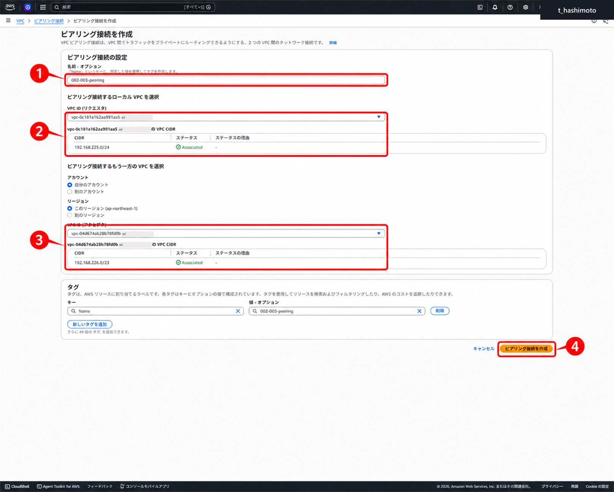
画像内の番号
① 接続名、② リクエスタ側のVPCとCIDR、③ アクセプタ側のVPCとCIDRを設定し、④「ピアリング接続を作成」を選択する
- 作成したピアリング接続を選択し、「アクション」からリクエストを承諾
- ステータスが
アクティブになったことを確認する。保留中の承諾のままルート設定へ進まない
Managed AD側（VPC002）の戻りルートを追加する
- VPCコンソールで「ルートテーブル」を開く
- Managed ADを配置した2つのサブネットそれぞれについて、「サブネットの関連付け」から関連ルートテーブルを確認する。2サブネットが異なるルートテーブルを使用している場合は、両方を変更対象にします。今回の画像は
ad-pri-rtb-002を確認したときの画面 - 対象となるすべてのルートテーブルについて、VPC、関連付くサブネットおよび変更前ルートを確認
- 「ルート」－「ルートを編集」－「ルートを追加」を選択
- 送信先にAD Connector側VPCのCIDR
192.168.226.0/23を入力 - ターゲット種別で「ピアリング接続」を選択し、前項で作成したVPCピアリング接続IDを選択
- 「プレビュー」を選択し、送信先CIDRとピアリング接続IDを照合
- 「変更を保存」を選択
- 手順2で特定したすべてのルートテーブルに対して手順4～8を繰り返します。保存後の各ルート一覧で、対象ルートの状態が
アクティブであることを確認
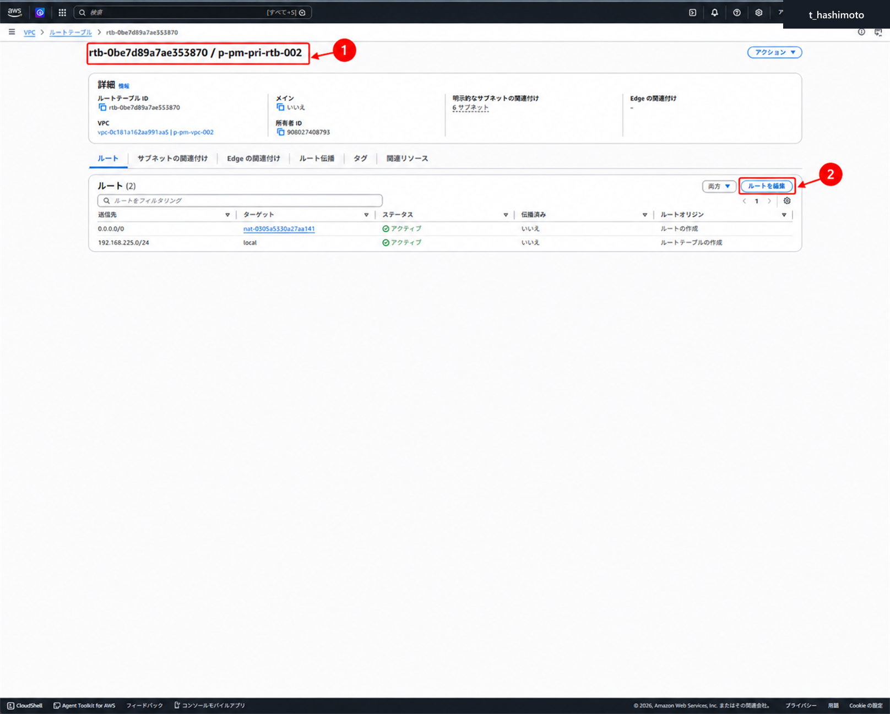
画像内の番号
① 対象ルートテーブルIDと名前を確認し、②「ルートを編集」を選択する
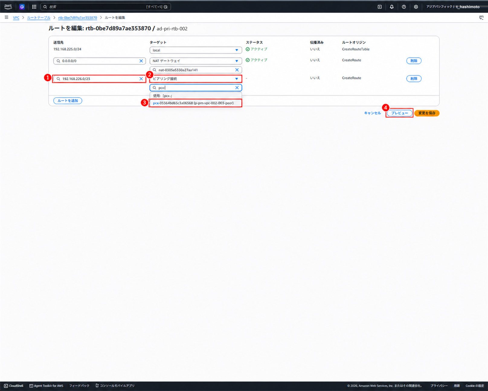
画像内の番号
① 送信先CIDRを入力し、② ターゲット種別「ピアリング接続」を選択し、③ 対象のピアリング接続IDを選択して、④「プレビュー」を選択する
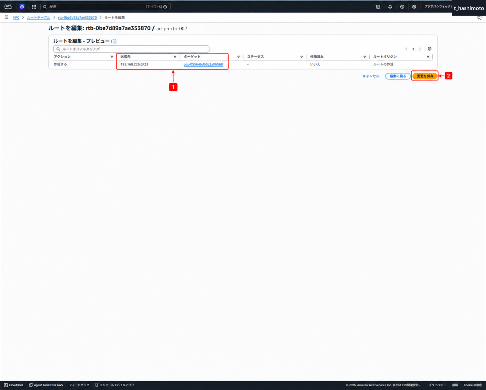
画像内の番号
① 保存予定の送信先CIDRとピアリング接続IDを照合し、②「変更を保存」を選択する
AD Connector側（VPC003）の往路ルートを追加する
- AD Connector用の2つのサブネットそれぞれについて、「サブネットの関連付け」から関連ルートテーブルを確認する。2サブネットが異なるルートテーブルを使用している場合は、両方を変更対象にします。今回の画像は
ad-vpc-003-pri-rtb-002を確認したときの画面 - 対象となるすべてのルートテーブルについて、VPC、関連付くサブネットおよび変更前ルートを確認
- 「ルート」－「ルートを編集」－「ルートを追加」を選択
- 送信先にManaged AD側VPCのCIDR
192.168.225.0/24を入力 - ターゲット種別で「ピアリング接続」を選択し、作成したVPCピアリング接続IDを選択
- 「プレビュー」を選択し、送信先CIDRとピアリング接続IDを照合
- 「変更を保存」を選択
- 手順1で特定したすべてのルートテーブルに対して手順3～7を繰り返します。保存後の各ルート一覧で、対象ルートの状態が
アクティブであることを確認
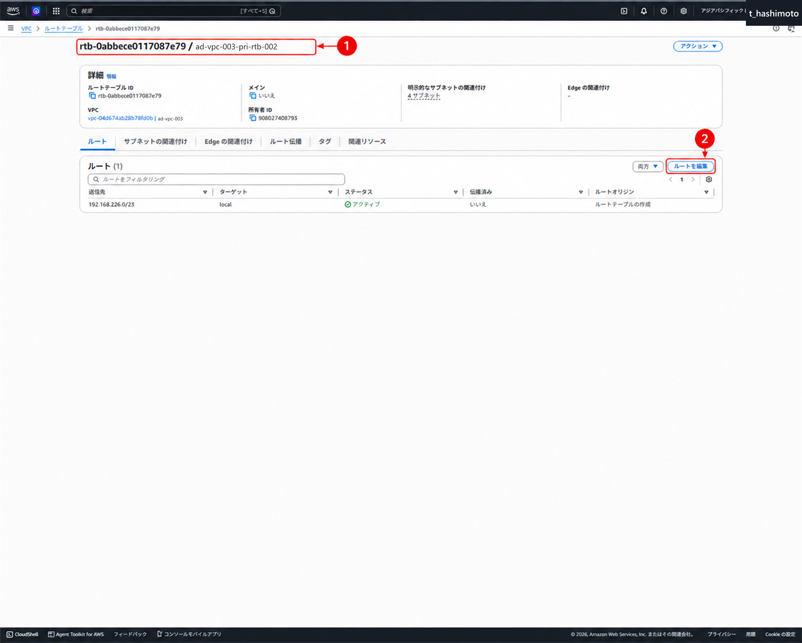
画像内の番号
① 対象ルートテーブルIDと名前を確認し、②「ルートを編集」を選択する
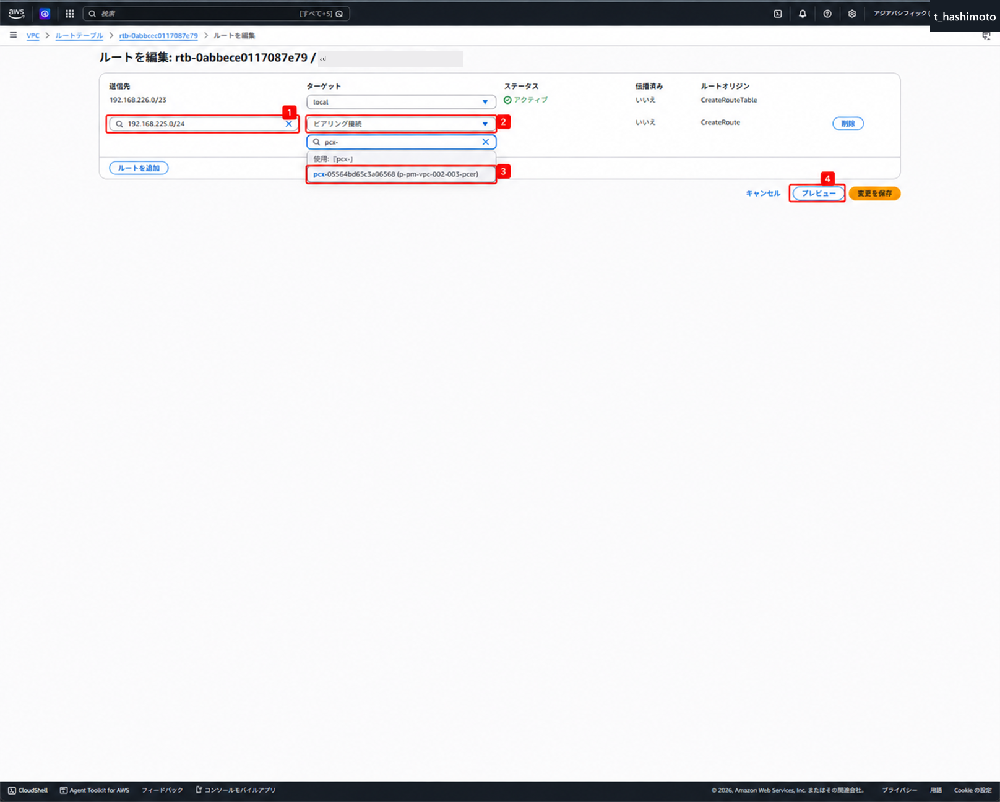
画像内の番号
① 送信先CIDRを入力し、② ターゲット種別「ピアリング接続」を選択し、③ 対象のピアリング接続IDを選択して、④「プレビュー」を選択する
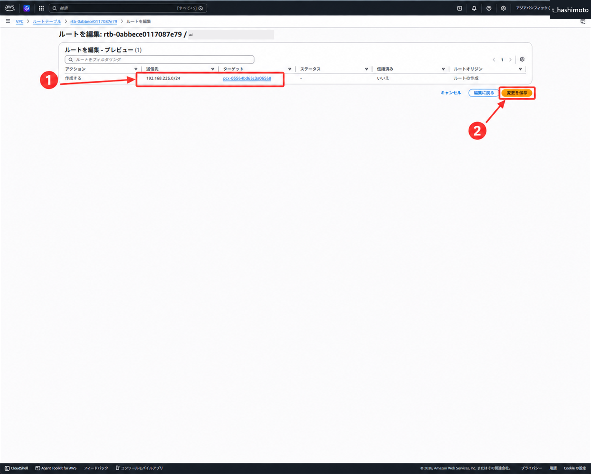
画像内の番号
① 保存予定の送信先CIDRとピアリング接続IDを照合し、②「変更を保存」を選択する
SG変更前に経路と名前解決を確認する
次を確認してからDC用SGを変更します。名前解決と疎通確認は、選択する各AD Connectorサブネットと同じルートおよびネットワークACL条件を持つ接続元から、2台の接続先DNS／DC IPの双方へ実施します。Managed AD側VPC内の管理EC2だけでの成功は、VPCピアリング経由の到達性を証明しません。2台は主系／待機系ではなく、どちらも利用可能なDCとして動作するため、双方への到達性が必要です。詳細はAWS Managed Microsoft ADの2台ドメインコントローラー構成・役割を参照する
- ✔ VPCピアリング接続の状態が
アクティブである - ✔ AD Connector側VPCからManaged AD側VPCへの往路が保存済みである
- ✔ Managed AD側VPCからAD Connector側VPCへの戻り経路が保存済みである
- ✔ 双方のネットワークACLが必要通信を拒否していない
- ✔ VPCのDNSサポートおよびDNSホスト名が設計どおりである
- ✔ 接続先DNSでADのSRVレコードを取得できる
AD Connector作成画面ではManaged ADのDNS IPを直接指定するため、VPCピアリングの「DNS解決を有効化」は本接続の必須条件ではありません。別用途でピアリング先のプライベートDNS名を解決する設計がある場合だけ、その要件に従って有効化する
本番環境での確認コマンドを次に示します。192.168.225.110は構築前に現行のDirectory Serviceコンソールで再確認し、実際のDNS IPが異なる場合はコマンドを置き換える
$dnsServers = @('192.168.225.68', '192.168.225.110')
foreach ($dnsServer in $dnsServers) {
Resolve-DnsName -Type SRV '_ldap._tcp.ad.datumidea.jp' -Server $dnsServer
Resolve-DnsName -Type SRV '_kerberos._tcp.ad.datumidea.jp' -Server $dnsServer
Test-NetConnection -ComputerName $dnsServer -Port 53
Test-NetConnection -ComputerName $dnsServer -Port 88
Test-NetConnection -ComputerName $dnsServer -Port 389
}TCPの確認だけではUDP疎通を証明できないため、ネットワークACL、SGおよびフローログも合わせて確認する
DC用SGへ接続元VPCを追加する
変更前のルールを確認する
- VPCコンソールで「セキュリティグループ」を開く
- 作業前確認で特定したManaged ADのDC用SGを選択
- 「インバウンドルール」を開く
- 既存ルールを削除・置換せず、変更前の件数と内容を確認
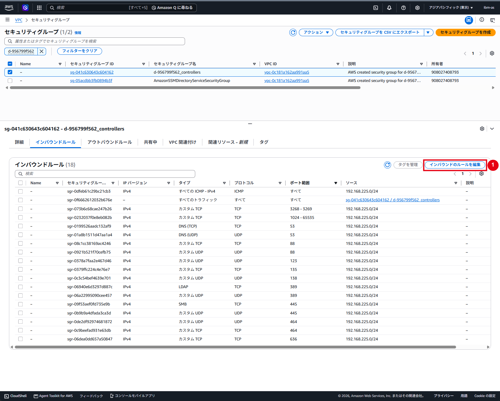
画像内の番号
①「インバウンドのルールを編集」を選択する
ルールを追加する
- 「インバウンドのルールを編集」を選択
- 「ルールを追加」を選択
- 顧客環境の承認済み設計に従い、次を入力
| 項目 | 今回の設定値 |
|---|---|
| タイプ | すべてのトラフィック |
| プロトコル | すべて |
| ポート範囲 | すべて |
| ソース | 192.168.226.0/23 |
| 説明 | ad-vpc-003など、接続元を特定できる名称 |
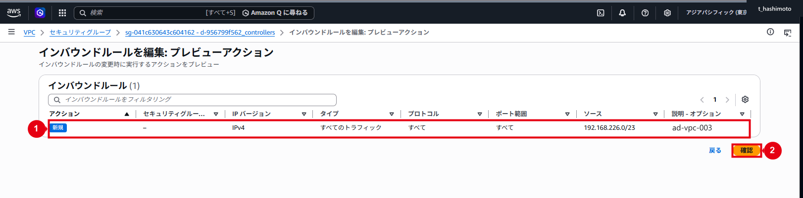
画像内の番号
① プレビューに表示された追加ルールのタイプ、プロトコル、ポート範囲、ソースおよび説明を確認し、②「確認」を選択する
- 送信元が対象VPCのCIDRと完全一致し、
0.0.0.0/0や別環境のCIDRでないことをダブルチェック - 追加内容のプレビュー画面へ進み、図9の追加行を確認して「確認」を選択
- 成功メッセージと、既存件数から1件増えたことを確認
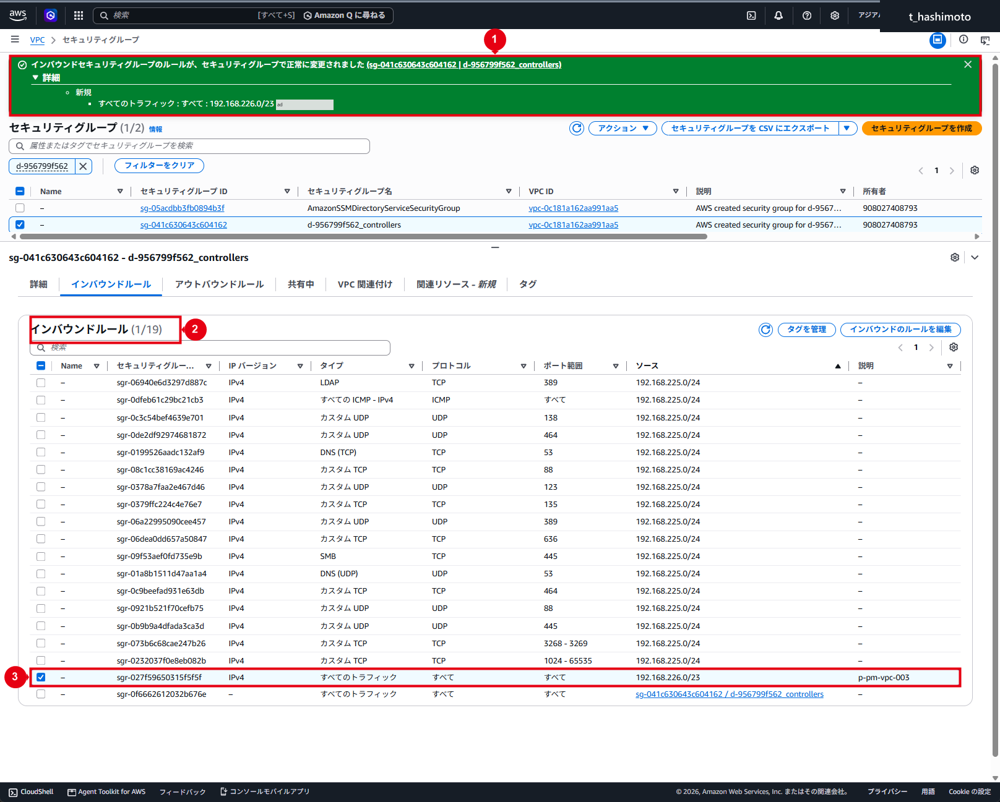
画像内の番号
① 変更完了の成功メッセージ、② ルール件数、③ 追加したCIDRと説明を確認する
- VPC004～006も作成する場合は、「VPC別の設定値」のCIDRを用いて1VPCずつ追加
実施後の確認
- ✔ 既存のAWS管理ルールが残っている
- ✔ 接続元VPCごとに承認済みの1ルールだけが追加されている
- ✔ 説明欄から対象VPCと変更目的を識別できる
- ✔ 意図しない送信元または重複ルールがない
AD Connectorを作成する
ディレクトリタイプを選択する
- AWS Directory Serviceコンソールを開く
- 「ディレクトリ」から「ディレクトリのセットアップ」を選択
- ディレクトリタイプで「AD Connector」を選択し、「次へ」を選択
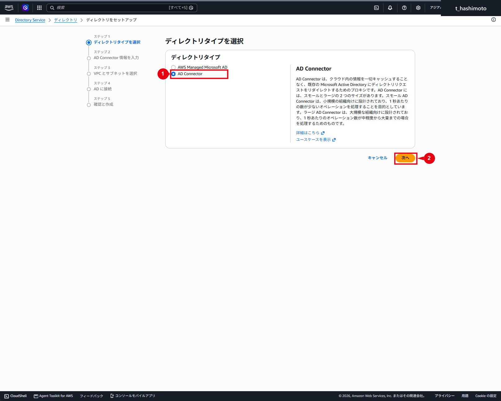
画像内の番号
①「AD Connector」を選択し、②「次へ」を選択する
サイズを選択する
- 「ディレクトリサイズ」で「Small」を選択
- 説明および画面上の料金を確認
- 「次へ」を選択
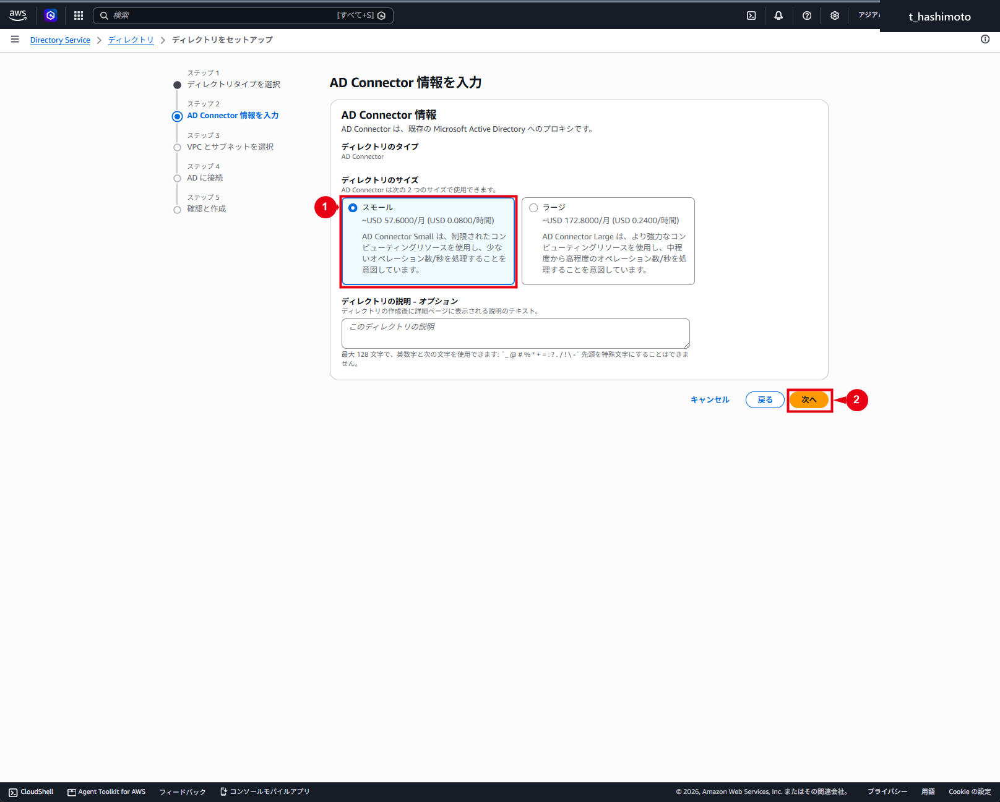
画像内の番号
①「スモール」を選択し、②「次へ」を選択する
画面に表示される料金は取得時点の内容です。作業時点の料金は料金ページと見積書で確認する
VPCと2サブネットを選択する
- 対象VPCを選択します。VPC003の場合は
ad-vpc-003を選択 - ネットワークタイプで「IPv4のみ」を選択
- 「今回の設定値」に記載したAD Connector用サブネットを、異なる2つのアベイラビリティーゾーンから選択
- WorkSpaces用の
003-003a/cサブネットと取り違えていないことを確認 - 「次へ」を選択
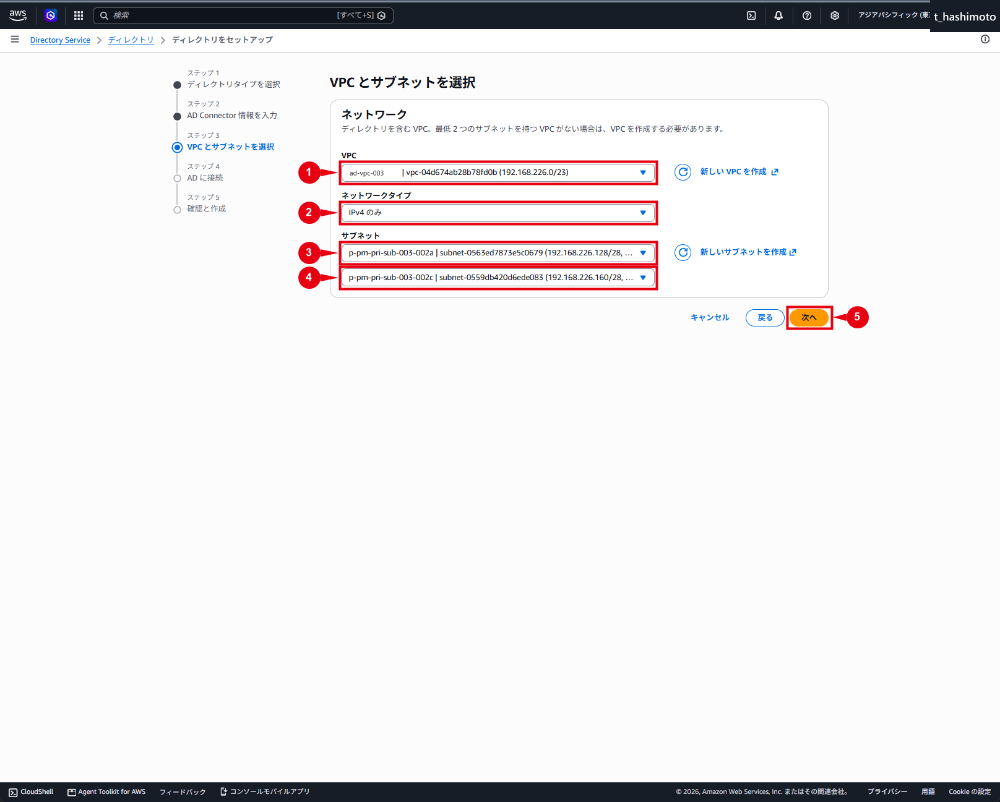
画像内の番号
① 対象VPCを選択し、② ネットワークタイプで「IPv4のみ」を選択します。③と④で、異なるアベイラビリティーゾーンのAD Connector用サブネットを1つずつ選択し、⑤「次へ」を選択する
Active Directory情報を入力する
次を入力する
| 項目 | 今回の設定値 |
|---|---|
| ディレクトリのDNS名 | ad.example.com |
| ディレクトリのNetBIOS名 | ad |
| DNS IPアドレス1 | 192.168.225.68 |
| DNS IPアドレス2 | 192.168.225.126 |
| サービスアカウントのユーザー名 | ADConnectorService |
| サービスアカウントのパスワード | 承認済みの保管先から入力 |
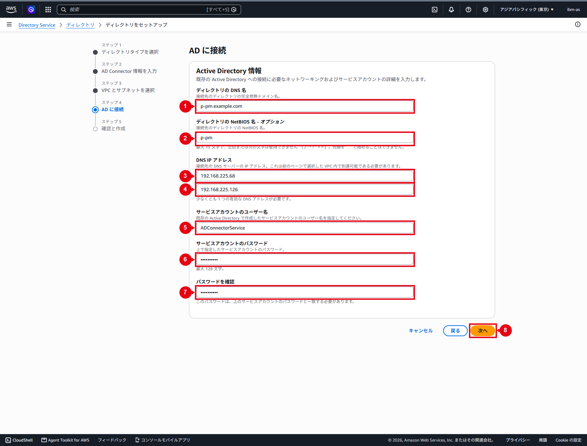
画像内の番号
① ディレクトリのDNS名、② NetBIOS名、③と④ 接続先DNS／DC IPを入力します。⑤ サービスアカウントのユーザー名、⑥ パスワード、⑦ 確認用パスワードを入力し、⑧「次へ」を選択する
情報：AD Connectorごとに専用アカウントを分ける
今回および現時点の本番設計ではADConnectorServiceを使用します。4つのAD Connectorで障害範囲とパスワード更新を分離する設計へ変更する場合は、20文字以内でADConnectorService03～ADConnectorService06のようにAD Connectorごとに1アカウントを用意し、命名規則とローテーション運用を承認してから表を更新する
設定内容を確認して作成する
- ディレクトリタイプ、サイズ、VPC、サブネット、DNSドメイン、NetBIOS名およびDNS IPを確認
- サービスアカウント名が個人ユーザーや管理者アカウントでないことを確認
- パスワードが画面や証跡に表示されていないことを確認
- 「ディレクトリの作成」を選択
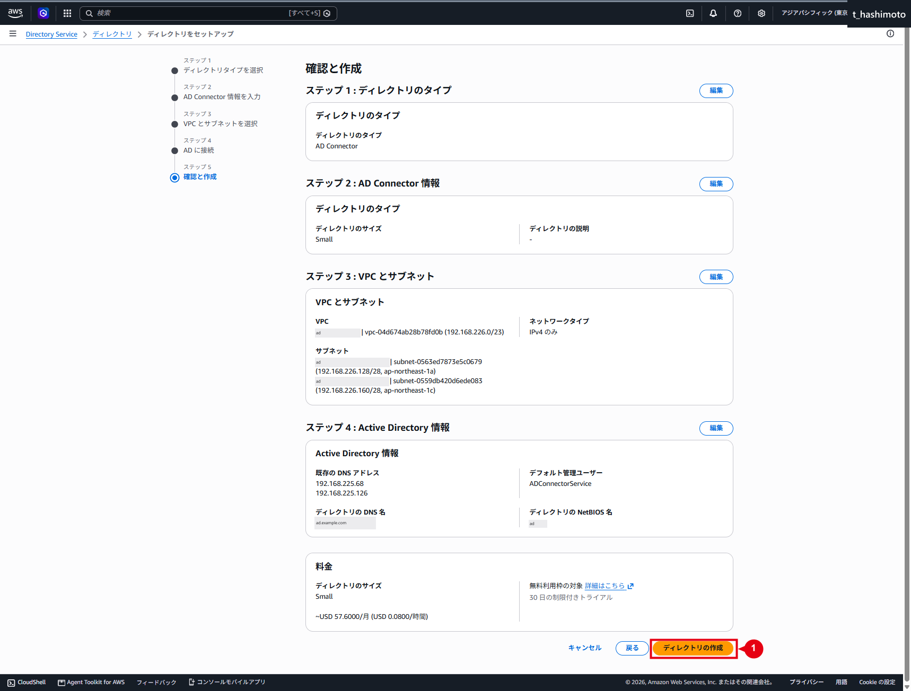
画像内の番号
① 画面内の設定値を確認し、問題がなければ「ディレクトリの作成」を選択する
作成状態を確認する
- 一覧に対象AD Connectorが表示され、ステータスが「作成中」であることを確認

画像内の番号
① 作成対象のDirectory IDを確認し、② 同じ行のステータスが「作成中」であることを確認する
- 画面を適宜更新し、ステータスが「アクティブ」になるまで待機
- 「アクティブ」にならない場合は、SG、ルート、NACL、DNS、SRVレコードおよびサービスアカウント状態を確認
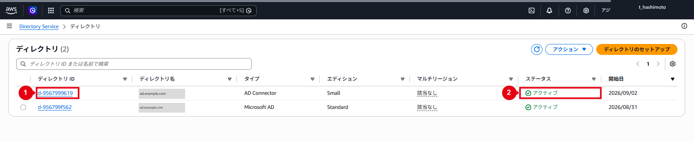
画像内の番号
① 作成対象のDirectory IDを確認し、② 同じ行のステータスが「アクティブ」であることを確認する
- 詳細を開き、タイプ、サイズ、接続先ドメインおよび接続アカウントを確認
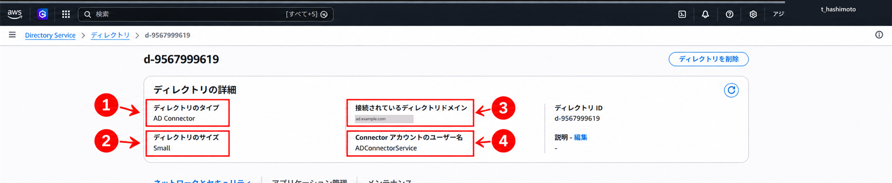
画像内の番号
① ディレクトリのタイプ、② ディレクトリのサイズ、③ 接続されているディレクトリドメイン、④ Connectorアカウントのユーザー名を確認する
- 「ネットワークとセキュリティ」まで画面を展開し、VPC、2サブネットおよびAD Connector DNS IP（AWS割当）を確認
自動作成されたSGを確認する
- AD Connectorの詳細から関連SGを確認
- VPCコンソールでSGを開く
- SGがAD Connectorを配置したVPCに作成されていることを確認
- SG名が「AD ConnectorのDirectory ID +
_controllers」形式であることを確認 - Managed AD側のDC用SGとは別物であることを、Directory ID、VPC IDおよびSG IDで確認
- AWSが自動作成したルールを、根拠なく削除または置換しないでください
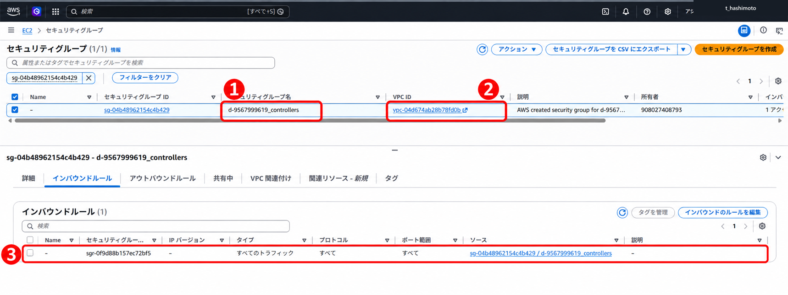
画像内の番号
① AD ConnectorのDirectory IDに対応するSG名、② AD Connectorを配置したVPC ID、③ SG自身をソースとする自己参照インバウンドルールを確認する。SG IDは同じ一覧行と詳細見出しで照合する
作成後の確認
- ✔ AD Connectorのステータスが「アクティブ」である
- ✔ ディレクトリタイプが「AD Connector」、サイズが「Small」である
- ✔ 接続先ドメイン、VPCおよび異なるアベイラビリティーゾーンの2サブネットが設定値と一致している
- ✔ AD ConnectorへAWSから割り当てられたDNS IPを現行コンソールで確認している
- ✔ サービスアカウントが専用アカウントであり、申請されていない高権限グループへ所属していない
- ✔ DC用SGに承認済みの接続元CIDRがあり、AD Connector用SGと区別できる
本環境でWorkSpacesを使用する場合、ドメインコントローラーのDisableVLVSupportLDAP属性が既定値0であることも要件となります。変更実績がある場合は、ドメイン管理担当へ確認する
障害時の確認順序
- 接続先DNS IPを、AD Connector自身のIPと取り違えていないか
- VPCピアリングがアクティブか
- 両VPCのルートテーブルに往復経路があるか
- DC用SGに正しい接続元CIDRがあるか
- ネットワークACLでDNS、Kerberos、LDAPおよび戻り通信が拒否されていないか
_ldap._tcpと_kerberos._tcpのSRVレコードを2台のDNSから取得できるか- サービスアカウントが有効、未ロック、期限内か
- 「次回ログオン時にパスワード変更」が無効か
Connectorsグループ所属と対象OUへの委任が残っているか- WorkSpaces利用時の読み取り・書き込み権限があるか
パスワード変更時の注意
サービスアカウントのパスワードが期限切れ、ロック、無効、またはAD Connector登録値と不一致になると、ユーザー検索やドメイン参加が失敗する可能性がある
PasswordNeverExpires=Trueはアカウント単位の例外であり、PSOが適用されている根拠ではありません。実効パスワードポリシーはGet-ADUserResultantPasswordPolicyで確認する
パスワードを変更する場合は、次の順序で実施する
- 変更前に、サービスアカウントとAD Connectorの対応表を確認
- 1アカウントを複数AD Connectorで共有している場合は、影響する全コネクタを同一作業で更新する計画と切り戻し手順を用意
- Active Directory側で専用サービスアカウントのパスワードを変更
- 直後にDirectory Serviceの対象AD Connectorすべてで「サービスアカウントの認証情報」を更新
- 各AD Connectorが「アクティブ」であることを確認
- 既存のWorkSpaceがある場合は、WorkSpacesからのユーザー検索と既存WorkSpaceのドメイン接続を確認する。既存WorkSpaceがない場合は、ユーザー検索をディレクトリ登録後に確認し、新規の検証用WorkSpaceは課金を伴うため承認後にAmazon WorkSpaces作成・バンドル設定手順で作成
- 次回更新日と担当者を運用台帳へ記録
警告：AD側の変更直後にAD Connectorの保存資格情報も更新する
パスワードは最初にActive Directory側で変更し、直後に対象AD Connectorへ保存されている認証情報を同じ新パスワードへ更新します。AD Connector側だけを更新しても、Active Directory側のパスワードは変更されない
WorkSpaces未使用時の登録状態と課金
AD ConnectorをWorkSpacesへ登録した後、30日間連続してWorkSpacesが関連付かない場合は、WorkSpacesから自動的に登録解除され、Directory Serviceの料金条件に従って課金されます。検証用WorkSpaceを削除した際は、ディレクトリ登録状態と課金影響を確認する
出典：AWS公式：WorkSpaces Personalへのディレクトリ登録と登録解除
切り戻し・削除
SG変更の切り戻し
AD Connector作成前に中止する場合は、今回追加した送信元CIDRのルールだけを削除します。既存のAWS管理ルールや他VPC用ルールを変更しないでください。削除前後のルール件数と対象CIDRを記録する
AD ConnectorまたはWorkSpacesが利用中の場合は、先にSGルールを削除しないでください。利用状況、依存リソースおよび通信影響を確認してから変更する
AD Connectorの削除
- 対象AD Connectorを使用するWorkSpacesがないことを確認
- WorkSpacesからディレクトリ登録を解除
- Directory Serviceの「アプリケーション管理」で、WorkSpacesを含むすべての関連サービスが解除済みであり、他の依存関係がないことを確認
- AD Connectorを削除
- 削除後にAWS管理のENIとSGの削除／残存状態を確認する。稼働中にENIやSGを手動削除せず、残存する場合は依存関係を調査
- 不要になったDC用SGの追加ルールを、変更申請に従い削除します。VPC CIDR単位の許可を削除する前に、同じCIDR内のドメイン参加済みEC2やその他のリソースがManaged ADを利用していないことを確認
- サービスアカウントが他のAD ConnectorやAWS連携で共有されていないことを確認
- サービスアカウントは直ちに削除せず、観察期間後に無効化・削除